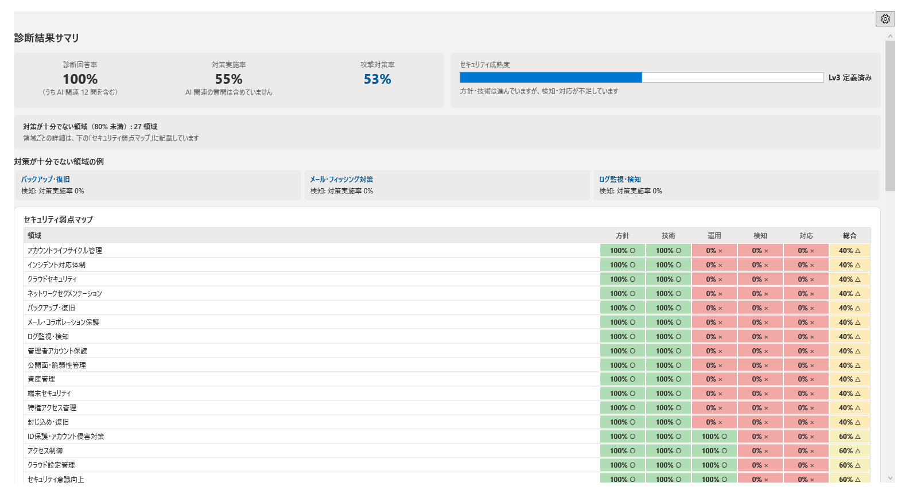
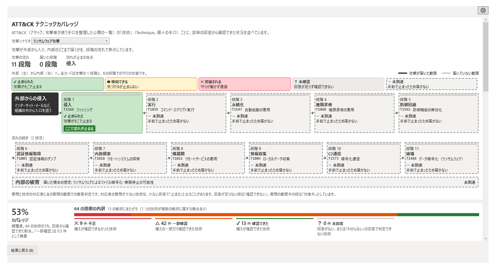
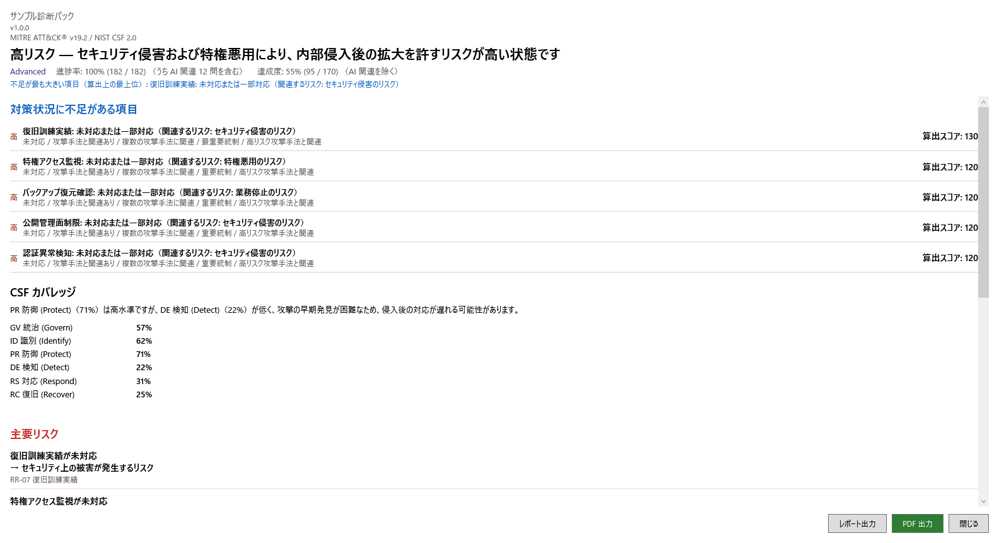
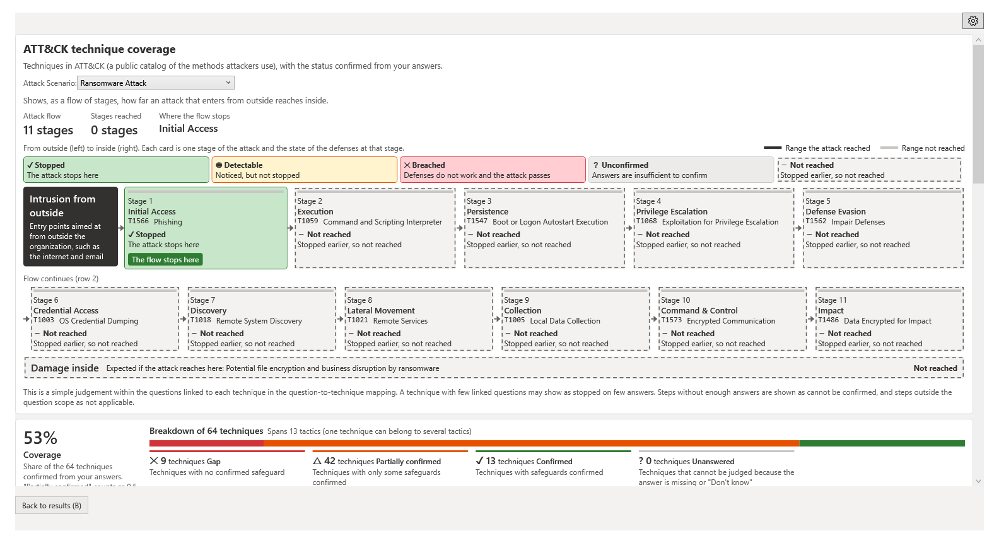
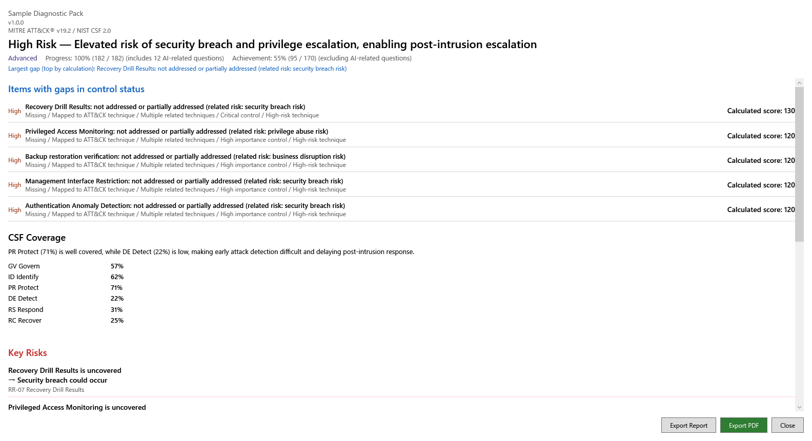

「対策の有無」だけでなく「どこが攻撃経路になりうるか」を整理する
多くのセキュリティ評価ツールは「対策が存在するか」を確認します。しかし実務で必要なのは「想定される攻撃に対して、どこが弱いのか」の整理です。
SecureNavigator は、MITRE ATT&CK（攻撃者の手口を世界共通の形で分類したもの）の攻撃手法を基に、対策の弱点 → 攻撃の進行経路 → 想定被害をルールベースで分析。防御上の弱点と、実施が低い面・テーマを整理し、報告・改善検討に使えるレポートを生成します。
こんな課題を解決します
専門知識がなくても、自社のセキュリティ対策の抜けを知るには？
質問に答えるだけで、組織の対策状況を弱点マップ（領域 x 観点）に整理します。開始時の質問（答える時間は約 2 分）に答えると、回答に合わせた診断の範囲の目安が画面に表示されます。質問に答えずに「未回答のまま始める」を選ぶと、いちばん小さい範囲の「かんたん」で始まります。
想定される攻撃に対して、自社のどこが弱いか分からないときは？
MITRE ATT&CK を基にした最大 6 つの代表的な攻撃シナリオ（標的型攻撃など）に対し、防御力をステップごとに分析します。Pro 版の攻撃ビューの経路図では、攻撃が外部から内部へ進む流れを段階ごとに示し、各段階の守りの状態（止められた・検知できる・突破される など）と、流れが止まる地点を確認できます。Free 版の攻撃ビューには、Pro の案内が表示されます。
何が足りないかを、面やテーマ別に把握したいときは？
診断結果から、実施が低い面（方針・技術・検知・対応・運用）ごとに、不足がみられるテーマとその理由を画面に表示します。期間や順位は示しません。
経営層や上長への報告資料を作るのに困るときは？ Pro
Pro 版では、診断結果をレポートとしてプレビューし、PDF・HTML・Markdown で保存できます。保存は、レポートプレビュー画面の「PDF 出力」ボタン（PDF）と「レポート出力」ボタン（HTML・Markdown）で行います。レポートには、対策状況に不足がある項目、CSF カバレッジ（NIST CSF 2.0 の機能ごとに、対策の対応状況を整理したもの）、主要リスク、想定攻撃シナリオの節が含まれ、説明・報告・改善検討の資料に使えます。章立てを備えたレポートは PDF と HTML です。Markdown は簡易のテキスト出力で、章の構成が異なり、診断概要・サマリなどの見出しと表の列名は日本語で出力されます。エグゼクティブサマリーの節は表示言語に従います。
中小企業が IPA のガイドラインで自己点検したいときは？
IPA 中小企業向けガイドラインを参考に、対応状況を整理します（Free 版でも利用できます）。参考情報としての確認であり、準拠や適合を判定するものではありません。
経産省のガイドラインや NIST CSF 2.0 でも確認したいときは？ Pro
Pro 版では、経産省サイバーセキュリティ経営ガイドラインと NIST CSF 2.0 を参考にした確認結果も表示します。いずれも参考確認であり、準拠・認証・適合の判定ではありません。
サプライチェーンセキュリティ対策評価制度（SCS）への準備状況を確認したいときは？ Pro
Pro 版では、セッション選択画面で「診断を開始する」の下にある「SCS 評価制度（★3 / ★4）の準備状況も確認する（任意）」を選ぶと、経済産業省のサプライチェーンセキュリティ対策評価制度（SCS）に向けた準備状況を確認できます。対象は★3 と★4で、どちらかを選び、専用の質問画面（「SCS の質問に答える」）で答えます。結果には、選んだ★の段階について、評価基準の残り件数、不足、未確認、次に対応する評価基準を表示し、レポートには「SCS の準備状況」の章が加わります。全体スコアには含まれません。回答にもとづく独立の自己点検であり、IPA が提供または確認したものではなく、登録の可否も判定しません。
診断データを社外に出せない環境で使いたいときは？
SecureNavigator は診断データを外部に送信せず、利用者のローカル環境にのみ保存します。診断データの処理にインターネット接続は不要です（Windows 10 Version 2004 以降 / Windows 11）。接続が必要になるのは、Microsoft Store からのインストール・更新、Pro の購入・復元、起動時のライセンス確認のときです。
時間がなく、質問が多くて進まないときは？
開始時の質問は約 2 分で答えられ、全問に答える必要はありません。回答に合わせて、診断の範囲（テーマ数・問数・目安の時間）が画面に表示されます。答えずに始めると「かんたん」の範囲になります。質問画面は、1 問ずつ答える「個別型」と、質問を行で並べて続けて答える「リスト型」を切り替えられ、回答は 1 問ごとに自動で保存されます。
※ Free 版でも全問の診断と画面での結果確認ができます。PDF などのレポート出力、経産省ガイドライン・NIST CSF 2.0 の参考確認、SCS の準備状況の確認、攻撃ビューの内容（経路図・戦術チップ・技術カードの状況別の群・用語欄）は Pro の機能で、Free の保存は 1 件です。ガイドラインとの照合は参考確認であり、認証・適合・準拠の判定はしません。
主な機能
攻撃シナリオシミュレーション
最大 6 つの代表的な攻撃シナリオに対して、組織の防御力をステップごとに分析します。
ガイドライン参考確認
IPA 中小企業向けガイドライン、経産省サイバーセキュリティ経営ガイドライン、NIST CSF 2.0 を参考に対応状況を整理します。
不足がみられる面とテーマの整理
診断結果から、実施が低い面（方針・技術・検知・対応・運用）ごとに、不足がみられるテーマとその理由を表示します。期間や順位は示しません。
レポート・資料出力 Pro
診断結果を PDF / HTML レポートとして出力。説明・報告・改善検討の資料として活用できます。Markdown 保存は簡易のテキスト出力で、診断概要などの見出しは日本語、エグゼクティブサマリーの節は表示言語に従います。
SCS 評価制度の準備状況の確認 Pro
経済産業省のサプライチェーンセキュリティ対策評価制度（SCS）の★3 または★4 について、評価基準の残り件数・不足・未確認・次に対応する評価基準を確認します。診断の開始時に選ぶ任意の確認です。登録の可否は判定しません。
高度な分析セクション Pro
成熟度詳細、原因と対策テーブルなど、より深い分析を確認できます。
日本語 / 英語切替
診断画面と、PDF・HTML のレポートは、日本語と英語に対応しています。Markdown 保存では、診断概要などの見出しが日本語で出力され、エグゼクティブサマリーの節は表示言語に従います。
v1.3 更新内容
- 開始時の質問を 1 画面にまとめました。回答に合わせて、診断の範囲（テーマ数・問数・目安の時間）を確認でき、「わからない・未定」も選べます。
- 質問画面を見直しました。「個別型」と「リスト型」を切り替えられ、リスト型ではテーマのチップで絞り込みながらキーボードで続けて回答できます。ホームで各テーマの進捗を確認でき、回答は 1 問ごとに自動で保存されます。
- 攻撃面の見せ方を更新しました（左から右の経路図・戦術チップ・状況別の群）。
- 専門用語の補足を追加しました。
- レポートの英語表記を修正しました。
- ファイルの保存を、途中で失敗しても元のファイルを壊さない方式に変更しました。
- 既存の診断結果は引き続き利用できます。
Free / Pro 比較
| 機能 | Free | Pro |
|---|---|---|
| 診断（全問回答） | ✓ | ✓ |
| 攻撃シナリオシミュレーション | ✓ | ✓ |
| 不足がみられる面とテーマの整理（画面表示） | ✓ | ✓ |
| IPA 中小企業向けガイドライン参考確認 | ✓ | ✓ |
| 経産省サイバーセキュリティ経営ガイドライン参考確認 | — | ✓ |
| NIST CSF 2.0 参考確認 | — | ✓ |
| AI 関連参考確認（NIST AI RMF / 総務省「AIのセキュリティ確保のための技術的対策に係るガイドライン」 / AI 事業者ガイドライン / IPA 生成AIセキュリティ資料 / UK NCSC Secure AI System Development 関連ガイダンス を参考にした確認結果の表示。準拠・認証・適合判定を示すものではありません。結果はレポートの中に表示されるため、レポートを開けない Free では表示されません） | — | ✓（レポート内のバッジ・カバレッジバー・詳細） |
| SCS 評価制度（★3 / ★4）の準備状況の確認（診断の開始時に選ぶ任意の確認。レポートの「SCS の準備状況」の章を含みます） | — | ✓ |
| 高度な分析（成熟度詳細・原因と対策） | — | ✓ |
| 攻撃ビューの内容（経路図・戦術チップ・技術カードの状況別の群・用語欄） | — | ✓ |
| PDF レポート出力 | — | ✓ |
| HTML レポート出力 / Markdown 保存（Markdown は簡易のテキスト出力。診断概要などの見出しは日本語、エグゼクティブサマリーの節は表示言語に従う） | — | ✓ |
| 日本語 / 英語切替 | ✓ | ✓ |
| セッション保存数 | 1件 | 3件 |
Pro は Microsoft Store のアドオン（アプリ内購入）です。アプリの設定画面で「Pro にアップグレード」を選び、表示される画面で「Pro を購入する」を選ぶと購入できます。コードをお持ちの場合は「プロモーション コードを使う」を選び、コードを入力して「引き換える」を選びます。Microsoft の引き換えページ（既定のブラウザーで開きます）で引き換えたあと、アプリで「引き換えを確認」を選びます。価格は Microsoft Store の製品ページで確認できます。
Free 版・Pro 版とも、利用者自身の組織以外に対する評価・助言・診断・コンサルティングなどの商用利用は禁止されています。詳しくは利用規約の「2. ライセンス許諾・利用範囲」を確認してください。
※ 診断結果のルールベース分析は参考情報であり、セキュリティ状態の完全性や特定目的への適合性を保証するものではありません。
🔒 完全オフライン動作 — SecureNavigator は外部にデータを送信しません。診断データは利用者のローカル環境にのみ保存されます。
例外: Microsoft Store での Pro の購入・復元と、起動時のライセンス状態の確認では、Microsoft Store との通信が発生します（プライバシーポリシーの「2. ネットワーク通信」を参照）。
アプリが示す答え（画面とレポート）
どこが弱いかを、ひと目で説明できますか？
結果画面の「セキュリティ弱点マップ」は、領域ごとに方針・技術・運用・検知・対応・総合の 6 つの観点で実施の度合いを色分けします。画面の凡例は「対策済み」「一部対策」「未対策」「未回答」の 4 項目で、色分けの目安は、80% 以上が対策済み、21〜79% が一部対策、20% 以下が未対策です。レポート（PDF・HTML）では、それぞれ「十分」「途中」「不足」の語で表示されます。あわせて「診断回答率」「対策実施率」「攻撃対策率」の 3 つの KPI を表示します。

どの攻撃に、どこまで耐えられますか？
次の攻撃シナリオ（最大 6 つ）について、各段階を「防御（対策で阻止）」「検知（検知し対応）」「被害（攻撃が到達）」で判定します。
- ランサムウェア攻撃
- 標的型攻撃（情報窃取）
- 内部不正（データ持ち出し）
- サプライチェーン攻撃
- クラウド侵害
- ビジネスメール詐欺（BEC）
攻撃ビューの経路図（Pro 版）は、各段階の状態を「止められた」「検知できる」「突破される」「未確認」「未到達」の 5 つで示し、攻撃の流れが止まる地点を表示します。開始時の質問の結果が「かんたん」の範囲のときは、範囲の確認画面に「攻撃シナリオ数 3」と表示されます。
結果画面の表と経路図の判定は、質問と技術の対応表にある質問の範囲での簡易判定で、対応表の質問が少ない技術は、少ない回答で「止められた」と表示されることがあります。

何から手を付けるべきかを、アプリが決めてくれますか？
アプリは、優先順位と期間を決めません。結果画面の「不足がみられる面とテーマ」で、実施が低い面（方針・技術・運用など）とテーマ（認証管理など）を示します。どれに、いつ着手するかは、社内の事情に合わせて利用者が判断します。
経営層への説明資料には、何が載りますか？ Pro
Pro で保存する PDF・HTML のレポートは、次の順に章が並びます。Markdown 保存は簡易のテキスト出力で、章の構成がこの一覧とは異なり、診断概要・サマリなどの見出しと表の列名は日本語で出力されます。エグゼクティブサマリーの節は表示言語に従います。
- 表紙と前書き（本レポートの位置づけ）
- エグゼクティブサマリ（総合リスク・主要リスク・対策状況に不足がある項目）
- シナリオ別の攻撃成立理由
- 主な指摘事項と根拠（どの回答が根拠かを示します）
- ガイドライン別の確認結果（AI 関連の参考確認もここに表示）
- ATT&CK フェーズ別対策状況（セキュリティ弱点マップを含みます）
- 主要な弱点の整理（項目が 0 件のときは表示されません。本文には上位 3 件を載せ、全件は付録に載ります。付録の全件表示は Pro）
- SCS の準備状況（診断の開始時に SCS の確認を選んだ診断だけ。内容の表示は Pro で、Free では Pro の案内だけが載ります）
- 付録（回答と根拠の一覧など）
- 総括
- 関連する参考フレームワーク
- 参照した版
- 免責事項

質問には、どう答えればよいですか？
各質問には「実施済み」「一部実施」「未実施」「未確認」の 4 択で答えます。専門用語には補足の説明が表示されます。
以前のバージョンで作成した診断を、最新版の観点で確かめ直せますか？
診断パック（質問や、ATT&CK・ガイドラインとの対応づけなどをまとめた診断の定義データ）またはアプリのバージョンが最新ではない診断を開くと、メイン画面に通知帯が表示されます。通知帯の「最新版で再評価」で、前回の回答を引き継いだ診断を作成できます。最新の診断では表示されません。保存できる件数に空きがあれば元の診断を残し、上限に達しているときは確認のうえ元の診断を上書きします。Free は保存が 1 件のため、上書きになります。診断パックの更新で元の回答をすべて引き継げない場合は、上書きの再評価は取りやめられ、元の診断は変更されません。前回との差を自動で比べる機能はありません。元の診断を残した場合は、画面や保存したレポートで結果を見比べられます。
アプリがしないこと
- ガイドラインへの準拠・適合や認証の判定（ガイドラインとの照合は参考確認です）
- 対策にかかる期間や費用の見積もり
- 対策の優先順位の決定
- SCS 評価制度の登録の可否の判定（準備状況の確認は、回答にもとづく独立の自己点検です）
- 前回の診断との自動比較
動作要件
- Windows 10 Version 2004 以降 / Windows 11
- WebView2 Runtime（PDF 出力に必要）
- インターネット接続: 診断データの処理には不要（Microsoft Store からのインストール・更新、Pro の購入・復元、起動時のライセンス確認では必要）
Not "Do you have controls?" but "Where are the gaps?"
Most security assessment tools verify whether controls exist. But what practitioners need is: "Against likely attacks, where are we weak?"
SecureNavigator uses MITRE ATT&CK techniques (a globally shared classification of attacker techniques) to analyze control gaps → potential attack paths → estimated impact through rule-based assessment. It organizes defensive weaknesses and the layers and themes with low implementation into reports you can use for communication and planning.
Problems this solves
How can I find the gaps in our security controls without specialist knowledge?
Just answer the questions, and SecureNavigator organizes your security status into a weakness map (area x perspective). The opening questions take about 2 minutes, and the screen then shows the estimated scope of the assessment based on your answers. If you select "Start without answers", the assessment starts with Quick, the smallest scope.
How do I see where we are weak against likely attack scenarios?
It analyzes your defenses step by step against up to 6 representative attack scenarios (such as targeted attacks) based on MITRE ATT&CK. In Pro, the attack view's path diagram shows how an attack moves from outside to inside, the defense status at each stage (stopped, detectable, breached, and so on), and the point where the flow stops. In Free, the attack view shows a note about Pro.
How do I find out what we are missing, area by area?
For each layer with low implementation (policy, technology, detection, response, operations), the results screen shows the themes with gaps and the reasons. No time frames or rankings are shown.
How do I create a security report for management? Pro
In Pro, you can preview the assessment as a report and save it as PDF, HTML, or Markdown. On the Report Preview screen, use the "Export PDF" button for PDF and the "Export Report" button for HTML or Markdown. The report includes sections for items with gaps in control status, CSF coverage (the control status for each NIST CSF 2.0 function), key risks, and attack scenarios, so you can use it for communication and planning. The chaptered report is the PDF and HTML output. Markdown is a simple text output with a different structure. Its headings (such as the assessment overview and summary) and table column names are output in Japanese. The Executive Summary section follows the display language.
How can a small business self-check against the IPA guideline?
SecureNavigator organizes your status using the IPA guidelines for small and medium-sized enterprises (Japan) as reference material, and this is available in Free. It is a reference check, not a determination of compliance or conformity.
Can I also review our posture against the METI guidelines or NIST CSF 2.0? Pro
In Pro, the results also show reference checks based on the METI Cybersecurity Guidelines (Japan) and NIST CSF 2.0. These are reference checks, not a determination of compliance, conformity, or certification.
How do I check our readiness for the Supply Chain Security rating scheme (SCS)? Pro
In Pro, select "Also check readiness for the SCS rating scheme (★3 / ★4) (optional)", below "Start Assessment" on the session selection screen, to check your readiness for the supply chain security rating scheme (SCS) of Japan's Ministry of Economy, Trade and Industry. It covers ★3 and ★4: choose one, then answer on a dedicated question screen ("Answer SCS questions"). For the star level you chose, the results show the number of remaining criteria, gaps, unconfirmed criteria, and the criteria to work on next, and the report gains an "SCS readiness" chapter. It is not included in the overall score. It is an independent self-check based on your answers. IPA did not provide or review it, and it does not decide whether you can be registered.
What if our assessment data cannot leave our environment?
SecureNavigator never sends your assessment data out and stores it only on your local device. Assessments run without an internet connection (Windows 10 Version 2004 or later / Windows 11). A connection is needed only for installing or updating through the Microsoft Store, purchasing or restoring Pro, and the license check at startup.
What if there are too many questions and not enough time?
The opening questions take about 2 minutes, and you do not have to answer all of them. As you answer, the screen shows the scope of the assessment (themes, questions, estimated time). If you start without answering, the assessment uses the Quick scope. The question screen lets you switch between Single-question mode, one question at a time, and List mode, with questions in rows for continuous answering. Each answer is saved automatically.
* The Free edition lets you complete the full assessment and view results on screen. PDF and other report export, METI guidelines / NIST CSF 2.0 reference checks, the SCS readiness check, and the Attack View contents (attack flow, tactic chips, status groups of technique cards, terms) are Pro features, and Free saves 1 session. Guideline checks are reference checks; SecureNavigator does not determine certification, conformity, or compliance.
Key Features
Attack Scenario Simulation
Analyze your defenses against up to 6 representative attack scenarios, step by step.
Framework Reference Checks
Organize status using IPA SME Guidelines (Japan), METI Cybersecurity Guidelines (Japan), and NIST CSF 2.0 as reference material.
Layers and Themes with Gaps
View the themes with gaps and the reasons for each layer with low implementation (policy, technology, detection, response, operations). No time frames or rankings are shown.
Report & Document Export Pro
Export assessment results as PDF / HTML reports for management communication and improvement planning. Markdown saving is a simple text output. Its headings, such as the assessment overview, are in Japanese, and the Executive Summary section follows the display language.
SCS Readiness Check Pro
For ★3 or ★4 of the supply chain security rating scheme (SCS) of Japan's Ministry of Economy, Trade and Industry, check the number of remaining criteria, gaps, unconfirmed criteria, and the criteria to work on next. You choose it, as an option, when you start an assessment. It does not decide whether you can be registered.
Advanced Analysis Pro
Review detailed maturity breakdown, cause-and-action tables, and deeper analysis.
Japanese / English
The assessment screens and the PDF and HTML reports support Japanese and English. In Markdown saving, headings such as the assessment overview are output in Japanese, and the Executive Summary section follows the display language.
v1.3 Updates
- The initial questions now fit on one screen. As you answer, you can see the scope of the assessment (themes, questions, estimated time), and "Not sure / undecided" is available.
- Reworked the question screen: switch between Single-question mode and List mode; in List mode, filter by theme chips while you answer with the keyboard. The Home screen shows each theme's progress, and each answer is saved automatically.
- Updated how the attack view is presented (left-to-right path diagram, tactic chips, groups by situation).
- Added explanations for technical terms.
- Corrected English wording in reports.
- File saving now uses a safe write method that keeps the original file intact if saving fails.
- Existing assessments remain available.
Free vs. Pro
| Feature | Free | Pro |
|---|---|---|
| Full Assessment (all questions) | ✓ | ✓ |
| Attack Scenario Simulation | ✓ | ✓ |
| Layers and Themes with Gaps (on-screen) | ✓ | ✓ |
| IPA SME Guidelines reference checks (Japan) | ✓ | ✓ |
| METI Cybersecurity Guidelines reference checks (Japan) | — | ✓ |
| NIST CSF 2.0 reference checks | — | ✓ |
| AI-related Reference Checks (results referencing NIST AI RMF / Japan MIC Guideline on Technical Measures for Securing AI / Japan AI Guidelines for Business / IPA generative AI security materials / UK NCSC Secure AI System Development guidance. Not an indication of compliance, conformity, or certification. The results appear only inside the report, so they are not available in Free, which cannot open the report) | — | ✓ (badge, coverage bar & details in the report) |
| SCS rating scheme (★3 / ★4) readiness check (an option you choose when starting an assessment; includes the "SCS readiness" chapter in the report) | — | ✓ |
| Advanced Analysis (maturity detail, cause & action) | — | ✓ |
| Attack View contents (attack flow, tactic chips, status groups of technique cards, terms) | — | ✓ |
| PDF Report Export | — | ✓ |
| HTML Report Export / Markdown Saving (Markdown is a simple text output; headings such as the assessment overview are in Japanese, and the Executive Summary section follows the display language) | — | ✓ |
| Japanese / English | ✓ | ✓ |
| Saved Sessions | 1 | 3 |
Pro is a Microsoft Store add-on (in-app purchase). In the app's Settings screen, select "Upgrade to Pro", then select "Buy Pro" on the screen that appears. If you have a promo code, select "Use a promo code", enter the code, and select "Redeem". Redeem it on the Microsoft page that opens in your default browser, then select "Check redemption" in the app. Check the price on the Microsoft Store product page.
In both Free and Pro, commercial use for parties other than your own organization is prohibited. This includes providing evaluation, advisory, assessment, or consulting services to third parties. See "2. License Grant and Usage Scope" in the Terms of Use for details.
* Assessment results are rule-based reference information and do not guarantee completeness or fitness for any particular purpose.
🔒 Fully Offline — SecureNavigator never transmits your data. All assessment data is stored only on your local device.
Exceptions: Buying or restoring Pro in the Microsoft Store and checking the license status at startup involve communication with the Microsoft Store (see "2. Network Communication" in the Privacy Policy).
What the App Tells You (Screens and Report)
Can I show at a glance where we are weak?
The Security Weakness Map on the Results screen color-codes each area by six perspectives: policy, technology, operations, detection, response, and overall. The legend on the screen has four items: Implemented, Partial, Not Implemented, and Unanswered. As a guide to the colors, 80% or higher is Implemented, 21–79% is Partial, and 20% or lower is Not Implemented. The report (PDF and HTML) uses the words Sufficient, In between, and Lacking instead. The screen also shows three KPIs: Response Rate, Implementation Rate, and Attack Coverage Rate.

Which attacks could we withstand, and how far?
For each of the following attack scenarios (up to six), the app rates every stage as Defense (blocked by controls), Detected (detected and handled), or Impact reached (the attack gets through).
- Ransomware Attack
- Targeted Attack (Data Theft)
- Insider Threat (Data Exfiltration)
- Supply Chain Attack
- Cloud Compromise
- Business Email Compromise (BEC)
The path diagram in the attack view (Pro) marks each stage with one of five states: Stopped, Detectable, Breached, Unconfirmed, or Not reached. It also shows where the attack flow stops. When the opening questions result in the Quick scope, the scope confirmation screen shows 3 attack scenarios.
The table on the Results screen and the path diagram give a simple judgement within the questions linked to each technique in the question-to-technique mapping, so a technique with few linked questions may show as Stopped on few answers.

Does the app decide what we should tackle first?
No. The app does not set priorities or time frames. The "Layers and themes with gaps" section on the Results screen shows the layers (policy, technology, operations, and so on) and themes (such as authentication) with low implementation. You decide what to address and when, based on your organization's circumstances.
What goes into a report for management? Pro
A PDF or HTML report saved in Pro contains the following chapters, in this order. Markdown saving is a simple text output with a different structure, and its headings (such as the assessment overview and summary) and table column names are output in Japanese. The Executive Summary section follows the display language.
- Cover and preface (what this report covers)
- Executive Summary (overall risk, key risks, and items with gaps in control status)
- Scenario-level Reasons the Attack Advances
- Main Findings and Rationale (shows which answers support each finding)
- Confirmation results by guideline (including the AI-related reference checks)
- ATT&CK Phase Coverage (includes the Security Weakness Map)
- Key Weaknesses Overview (not shown when there are no items; the main text lists the top 3, and the full list is in the appendix, shown in full in Pro)
- SCS readiness (only for assessments started with the SCS check; the content is shown in Pro, and Free shows only a note about Pro)
- Appendices (such as the index of answers and rationale)
- Conclusion
- Related reference frameworks
- Reference versions used
- Disclaimer

How do I answer the questions?
Each question has four choices: Implemented, Partially Implemented, Not Implemented, and Unverified. Technical terms come with short explanations.
Can I reassess an assessment created with a previous version using the latest perspective?
When you open an assessment whose diagnosis pack (the assessment definition data, including the questions and their mapping to ATT&CK and guidelines) or app version is not the latest, a notice band appears on the main screen. Select "Reassess with Latest" in the band to create a new assessment that carries over your previous answers. The band does not appear for an up-to-date assessment. If you have room to save another assessment, the original is kept; if you have reached the limit, the original is overwritten after you confirm. Free saves only one assessment, so it is always overwritten. If the questions changed with a diagnosis pack update and not all of your answers can be carried over, the overwriting reassessment is cancelled and the original is not changed. The app does not compare results with the previous assessment automatically. If you keep the original, you can compare the results yourself on screen or in saved reports.
What the App Does Not Do
- Determine compliance, conformity, or certification against any guideline (guideline checks are for reference only)
- Estimate the time or cost of improvements
- Decide the priority of actions
- Decide whether you can be registered under the SCS rating scheme (the readiness check is an independent self-check based on your answers)
- Compare results with a previous assessment automatically
System Requirements
- Windows 10 Version 2004 or later / Windows 11
- WebView2 Runtime (required for PDF export)
- Internet: Not required for assessments (needed for installing or updating through the Microsoft Store, purchasing or restoring Pro, and the license check at startup)